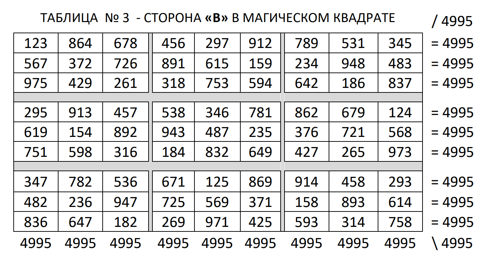
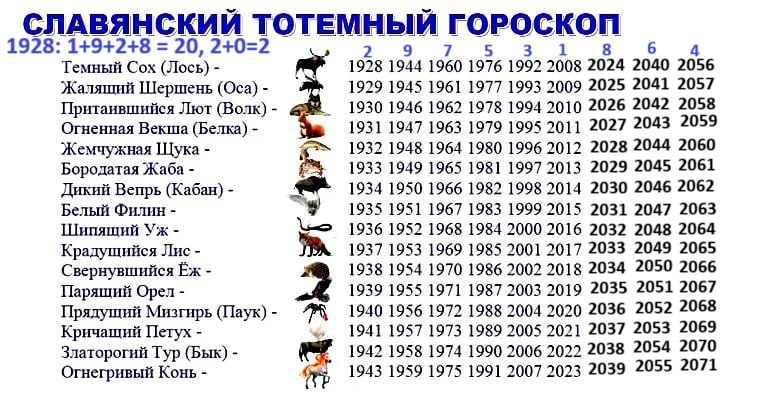
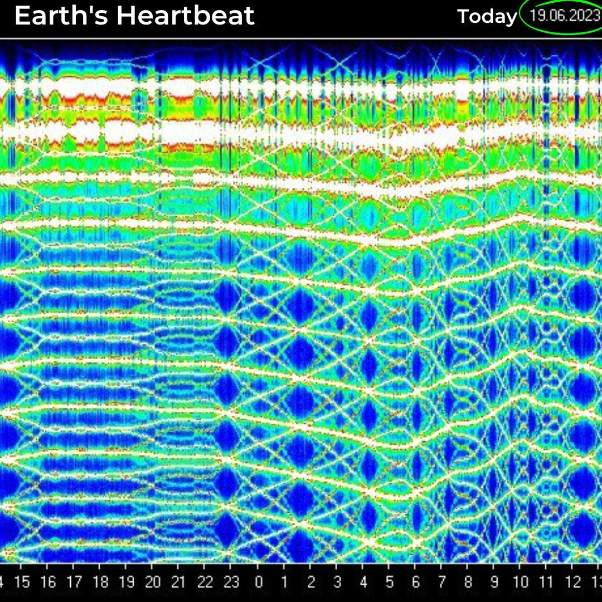
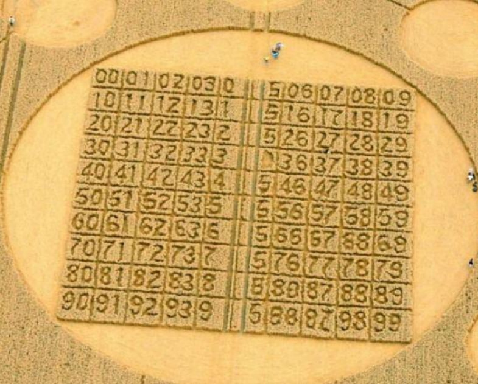

Auf dieser Seite werden Beweise dafür präsentiert, dass das Buch von Aslan Uarziaty eine wahre weltweite Sensation ist und seine Methode zur Konstruktion von Quadraten in direktem Zusammenhang mit alten Kalendern, sakralen Symbolen und sogar Kornkreisen steht.
🌟 Sensationelle Quadrate
Auf der Website konnte nur ein kleiner Teil dessen umgesetzt werden, was im Buch präsentiert wird. Darin gibt es magische Quadrate, deren Komplexität und Eleganz beeindrucken. Diese Zahlenstrukturen bewahren perfekte Summen in Reihen, Spalten und Diagonalen – selbst bei steigender Zahlenkomplexität. Das macht die Methode nicht nur einzigartig, sondern auch ästhetisch vollkommen aus mathematischer Sicht. Die Methode von Aslan Uarziaty ist eine wahre weltweite Sensation.

Таблица №3 — Сторона В
🕰️ Das Geheimnis der alten Kalender
In seinem Buch liefert Aslan Uarziaty Beweise dafür, dass in verschiedenen Kalendern dieselben Informationen verschlüsselt wurden – dieselben Schlüssel und Tabellen.
Inspiriert von den Beispielen im Buch, beschloss ich, eine kleine Untersuchung durchzuführen: die beschriebenen Beispiele zu wiederholen, um mich persönlich von ihrer Richtigkeit zu überzeugen.
Das Ergebnis brachte mich wirklich zum Nachdenken: „Wie ist das möglich?“
Eine Sensation, die im slawischen Kalender verborgen ist.
Nach dem Beispiel aus dem Buch führte ich ein Experiment mit dem slawischen Totemkalender durch. Es ist schwer zu glauben, was ich entdeckt habe – aber es ist wahr. Ich nahm den slawischen Kalender und wandelte jedes Jahr in seinen Zahlenwert um. Auf dem ersten Foto ist ein Beispiel gezeigt: der Zahlenwert des Jahres 1928 ist 2, weil 1+9+2+8 = 20, 2 + 0 = 2.
Diesen einfachen Vorgang wiederholte ich mit allen Jahren, die auf dem Foto dargestellt sind. Um den vollständigen Zyklus zu erhalten, verlängerte ich den Kalender bis zum Jahr 2071. Das Ergebnis war eine Zahlenmatrix – sie ist auf dem zweiten Foto zu sehen.
Aus dieser Matrix wählte ich dann Zahlen mit gleicher Stellenanzahl aus und ordnete sie in ein Quadrat 3x3. Ein Beispiel auf dem dritten Foto: Zuerst wählte ich die Zahl 31. Im Kalender folgt darauf vertikal 42 – sie wurde die nächste, dann 53 und so weiter, bis das Quadrat vollständig war. Danach berechnete ich die Summen der Reihen und Spalten des entstandenen Quadrats. Auf den ersten Blick – nichts Besonderes: Die Summen sind völlig unterschiedlich. Aber! Wenn man die Summen aller drei Reihen addiert, ergibt sich derselbe Wert wie bei den drei Spalten – 495.
Man könnte denken, dass es nur ein Zufall ist, deshalb wiederholte ich das Experiment und wählte eine andere Zahl, zum Beispiel 75. Und wieder – die Summe aller Reihen entsprach der Summe aller Spalten: 495! Ich wollte wissen, was passiert, wenn man dreistellige Zahlen nimmt – das Ergebnis wiederholte sich. Nur war die Summe diesmal 4995. Dann begann ich, die Anzahl der Ziffern schrittweise zu erhöhen – und jedes Mal war das Ergebnis dasselbe: zuerst eine 4, dann mehrere 9, und am Ende eine 5.
Unglaublich! Das ist ein wahres Wunder – ein solches Codierungssystem hat bis heute überlebt. Wie ist das möglich?
Die Beweise liegen direkt vor Ihren Augen.

Славянский тотемный календарь
🔍 Weitere Experimente mit Kalendern
In seinem Buch stellte Aslan eine äußerst interessante Untersuchung vor. Wenn man den Tzolkin-Kalender (siehe erstes Foto) in Zahlenwerte umwandelt (siehe zweites Foto) und die resultierende Matrix im Kontext dreistelliger Zahlen betrachtet, erkennt man stets den Hauptschlüssel — 369, sowohl vertikal als auch horizontal.
Ich beschloss, dieses Experiment mit dem slawischen Totemkalender sowie dem chinesischen Kalender zu wiederholen.
Auf dem vierten Foto ist die bereits zuvor gezeigte Zahlenmatrix abgebildet — der slawische Kalender in Zahlenwerten.
Die Zahlen 297 (orange), 975 (grün) und 753 (blau) zeigten durch ihre Quersummen den Hauptschlüssel 369:
2 + 9 + 7 = 18 → 1 + 8 = 9
9 + 7 + 5 = 21 → 2 + 1 = 3
7 + 5 + 3 = 15 → 1 + 5 = 6
Wenn man weiterhin dreistellige Zahlen vertikal oder horizontal betrachtet, erhält man immer wieder den Hauptschlüssel — 369.
Beim chinesischen Kalender ist die Situation ähnlich: Wenn man ihn in Zahlenwerte umwandelt und das Ergebnis im Kontext dreistelliger Zahlen analysiert, erkennt man erneut den Schlüssel 369 — sowohl vertikal als auch horizontal.
Новое изображение
🌐 Schumann-Resonanz
Die nächste Sensation steht im Zusammenhang mit einer erstaunlichen Tatsache: Die Quadrate, die nach der Methode von Aslan Uarziaty erstellt werden, bilden immer ein in vielen Kulturen verehrtes Symbol – den achtstrahligen Stern.
Auf der Startseite der Website können Sie selbst ein magisches Quadrat erstellen und beobachten, wie das System automatisch gleiche Ziffern miteinander verbindet: sie formen stets die Struktur dieses Sterns.
Zum ersten Mal zeigte Aslan im Juni 2023, wie die Tabellen diesen achtstrahligen Stern formen. Und kurze Zeit später, im selben Monat, geschah etwas Unerklärliches: Die Schumann-Resonanz schien verrückt zu spielen und „zeichnete“ ebenfalls einen achtstrahligen Stern (siehe erstes Foto) – so etwas war zuvor noch nie beobachtet worden.
Auf den folgenden Fotos sehen Sie einen Vergleich zwischen dem Stern aus dem Buch und dem, was auf der Grafik der Schumann-Resonanz erschien.
Ich persönlich glaube nicht an solche Zufälle – zu viele unerklärliche Dinge geschehen rund um dieses Buch.
Ich bin überzeugt, dass dies ein wahres Zeichen von oben ist – ein Hinweis für uns, einfache Menschen: auf das Buch aufmerksam zu werden und es selbst zu überprüfen, anstatt es zu ignorieren oder zu sagen „ich glaube nicht daran“, ohne es je geprüft zu haben.

Резонанс Шумана - Изображение 1
🌾 Kornkreise
Im Internet findet man eine enorme Anzahl von Kornkreiszeichnungen. Viele von ihnen sind so beeindruckend, dass es schwerfällt zu glauben, dass sie von Menschenhand geschaffen wurden.
Aslan hat eine dieser Zeichnungen entschlüsselt — jene, die 2006 auf einem Feld in England erschien (siehe erstes und zweites Foto).
Das Muster erinnert stark an ein aufgeschlagenes Buch mit Zahlen, umgeben von neun runden Sphären.
Alles wirkt wie ein weiterer Hinweis: „Überprüft das Buch“.
Auf dem dritten Foto ist dieselbe Zeichnung zu sehen, jedoch bereits in numerischer Form.
Auf dem vierten Foto zeigt Aslan einen der entscheidenden Schritte der Entschlüsselung: Wie bei der Methode zur Konstruktion magischer Quadrate musste man die Nullen entfernen und zudem wiederholende Spalten ausschließen.

Рисунок на поле — Изображение 1
Fazit
Diese Liste enthält bei Weitem nicht alle Beweise, die Sie im Buch finden werden. Aber selbst diese wenigen reichen mehr als aus, um einen zum Nachdenken zu bringen: „Wie ist so etwas möglich?“
Konnte ein Mensch allein all diese Geheimnisse entschlüsseln und ein so geniales, vollkommenes System zur Konstruktion magischer Quadrate erschaffen?
War Aslan wirklich klüger als Hunderte von Wissenschaftlern, die die Kalender in- und auswendig studiert haben, aber dieses verschlüsselte Buch nicht entdecken konnten?